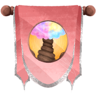
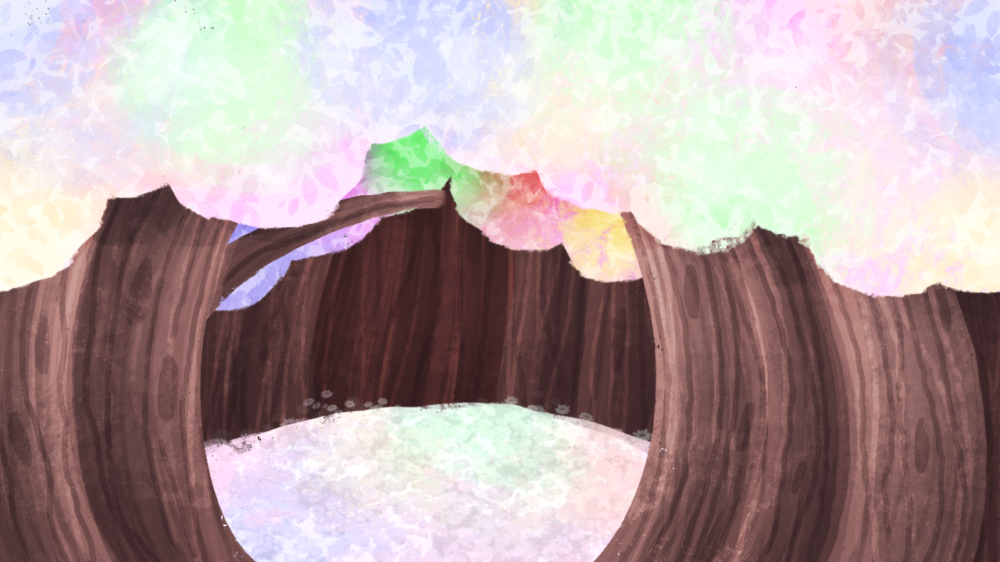

The World!
Sweetlands, home to agriculture within the MixScape.
The Sweetlands are the pastel, candy land that resides within the world of the Mixscape. Most popular for its festivals, celebrations and agriculture. The land helps people who desire an isolated farm life and find happiness in the festive lands.
One main rule, don’t go eating the land!!
Important landmarks include:
Sweet Central
In the main town area of the Sweetlands, most festivals and celebrations are held here. Main celebrations include things such as:
The festival of Treats
Harvest Week
Nightlands Night
United Day!
Forest of Illusions
A forest full of bright, pastel leaves that connect between Sweetlands and Nightlands. Beware! The forest might cause a person to see things that aren’t real…
Sweetsters Townhall
Caramel’s place of work! Also where most important businesses go within Sweetlands. whether that be government business or stuff about trade, always busy there.
Sweet Farms
The large farm area that is worked on by many people. Running large farms of different varieties of goods. A successful area and the perfect place for horse riding!
Flower Feilds
Endless and endless fields of flowers, such a gorgeous area to see and witness.
